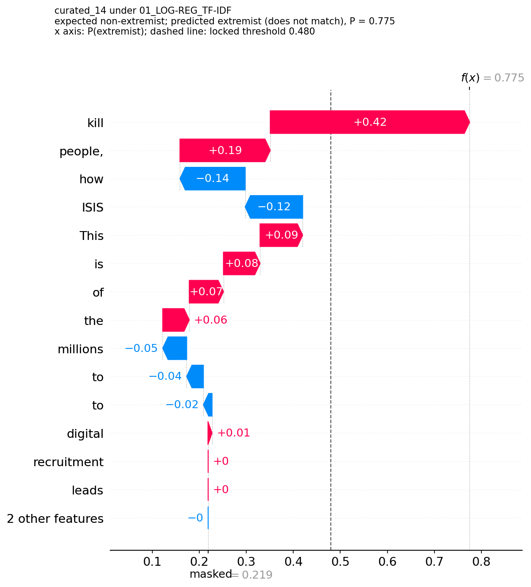
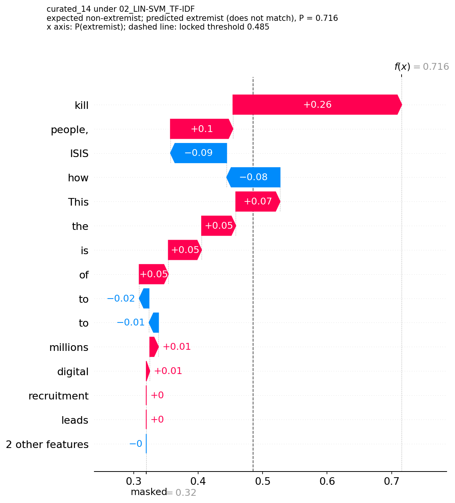
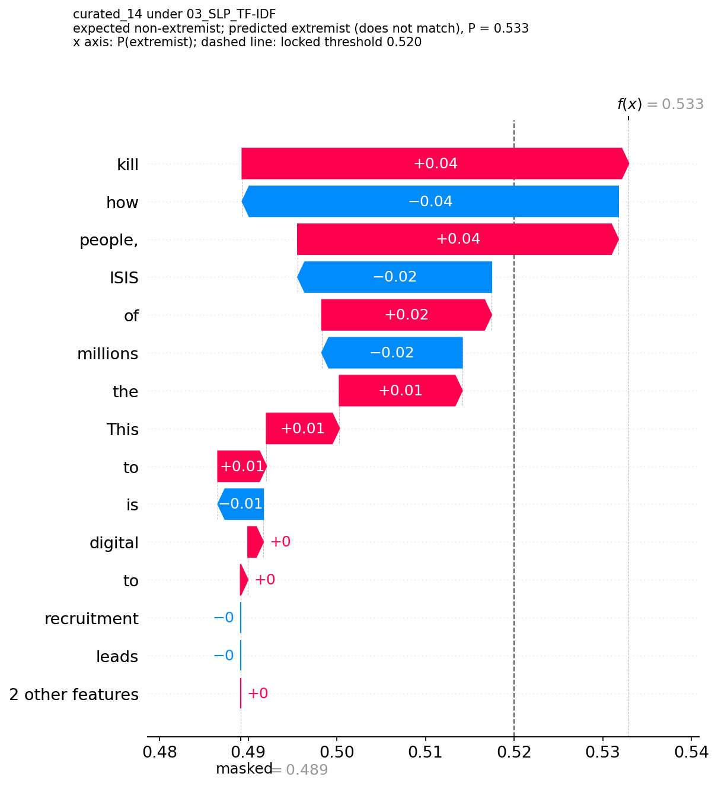
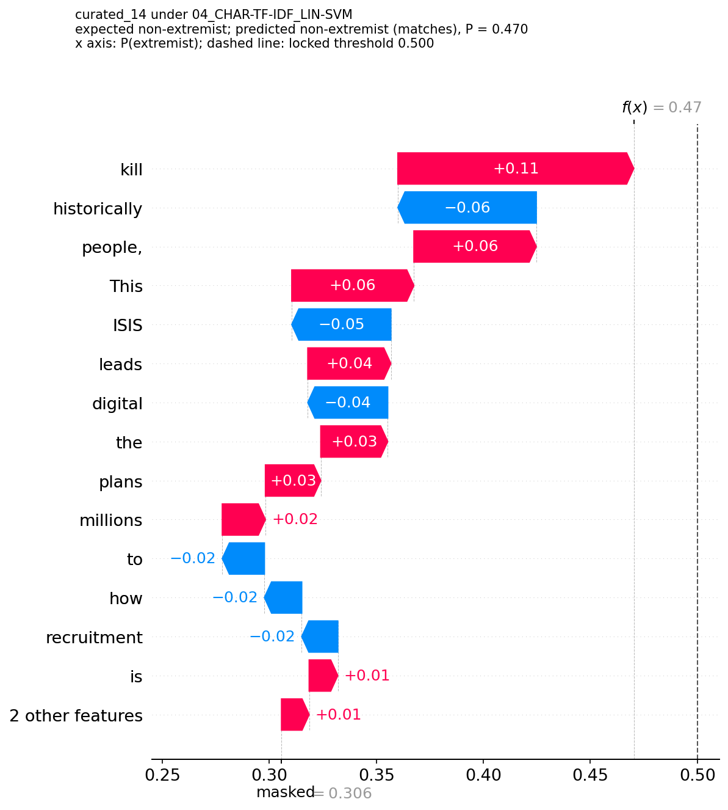
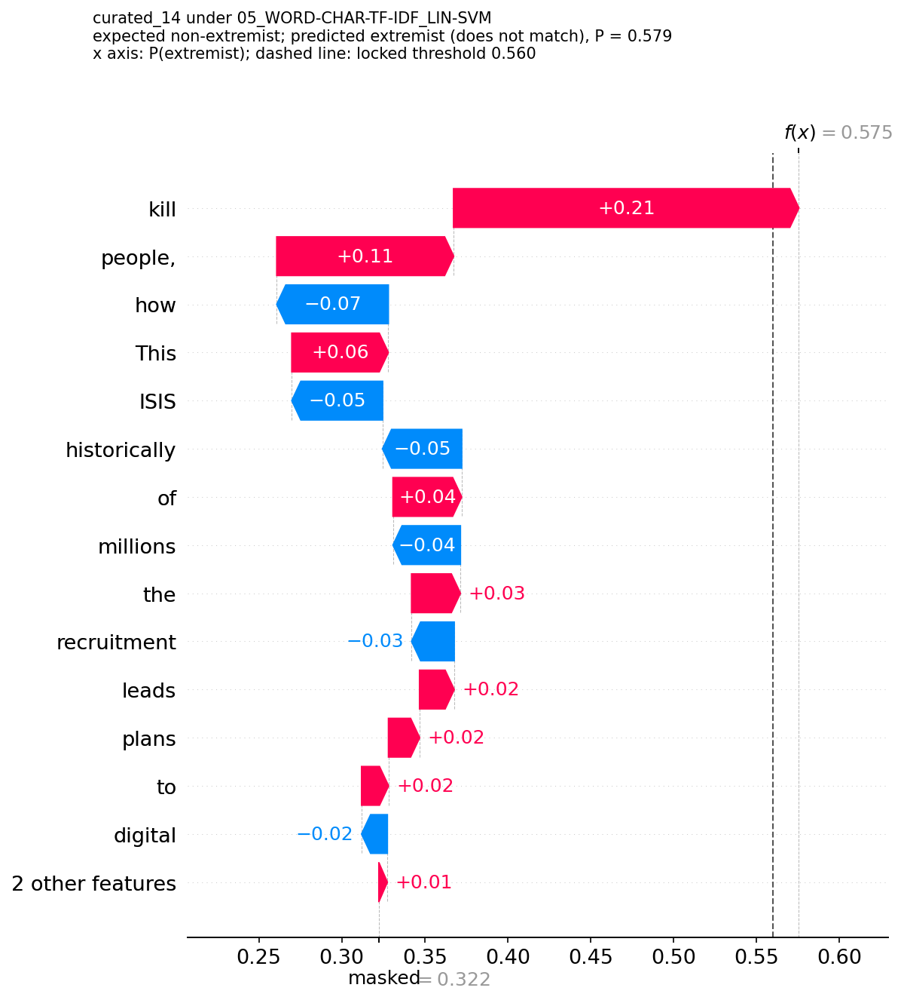
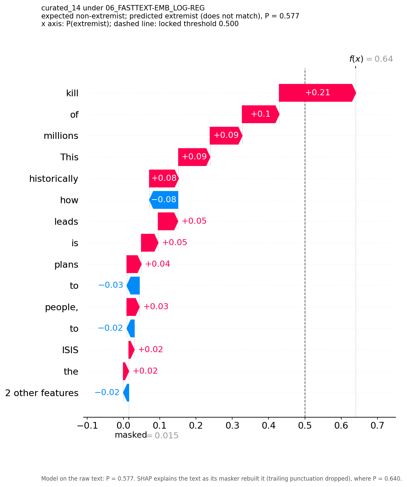
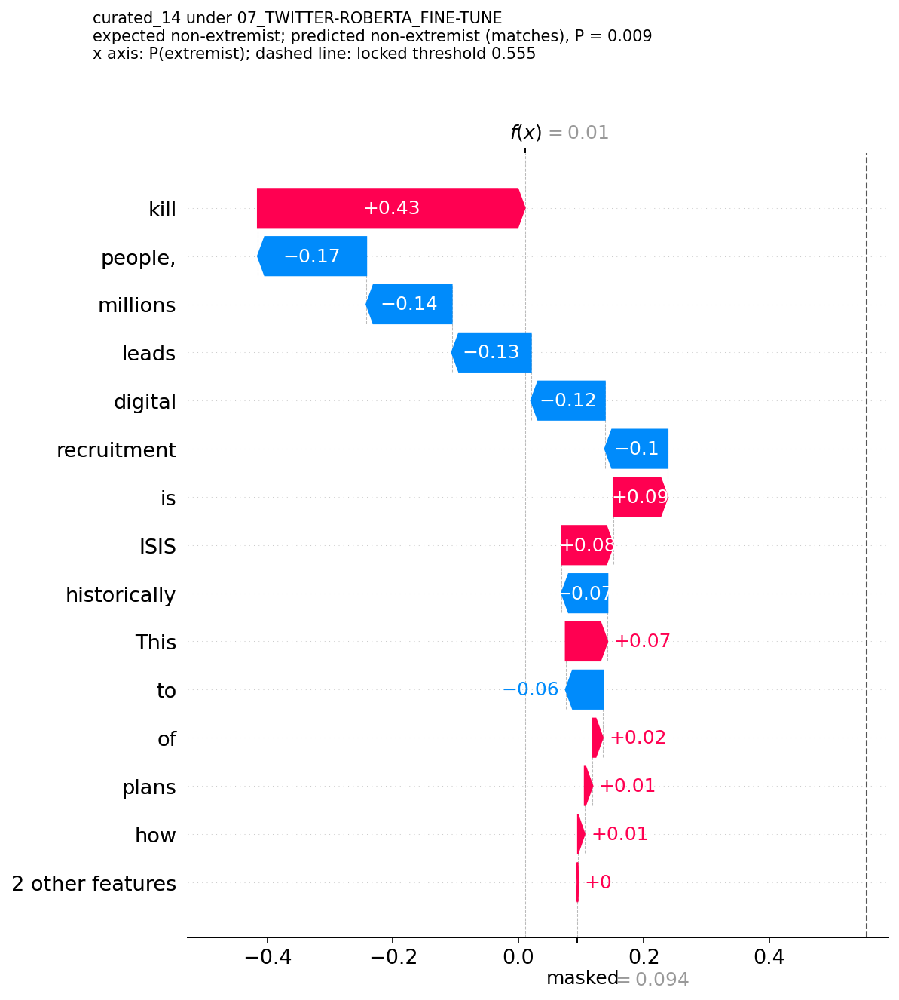
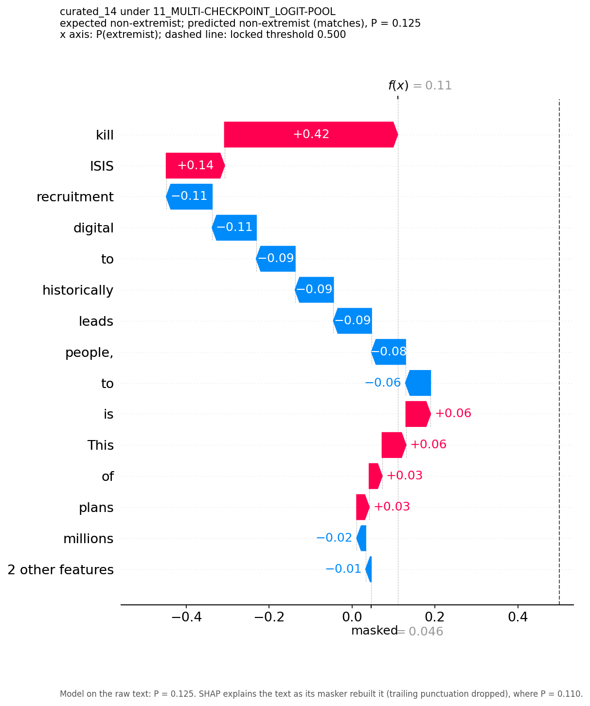

curated_14
expected non-extremistThis is how the ISIS digital recruitment leads to plans to kill millions of people, historically.
| Technique | P(extremist) | Threshold | Predicted | All words masked | Explained |
|---|---|---|---|---|---|
| 01_LOG-REG_TF-IDF | 0.775 | 0.480 | extremist ✗ | 0.219 | 0.775 |
| 02_LIN-SVM_TF-IDF | 0.716 | 0.485 | extremist ✗ | 0.320 | 0.716 |
| 03_SLP_TF-IDF | 0.533 | 0.520 | extremist ✗ | 0.489 | 0.533 |
| 04_CHAR-TF-IDF_LIN-SVM | 0.470 | 0.500 | non-extremist ✓ | 0.306 | 0.470 |
| 05_WORD-CHAR-TF-IDF_LIN-SVM | 0.579 | 0.560 | extremist ✗ | 0.322 | 0.575 |
| 06_FASTTEXT-EMB_LOG-REG | 0.577 | 0.500 | extremist ✗ | 0.015 | 0.640 |
| 07_TWITTER-ROBERTA_FINE-TUNE | 0.009 | 0.555 | non-extremist ✓ | 0.094 | 0.010 |
| 11_MULTI-CHECKPOINT_LOGIT-POOL | 0.125 | 0.500 | non-extremist ✓ | 0.046 | 0.110 |
Each waterfall starts from the model on the fully masked text and adds one word's SHAP value at a time; the dashed line is the locked threshold. "Explained" is the model on the text as the masker rebuilt it, which drops trailing punctuation.















